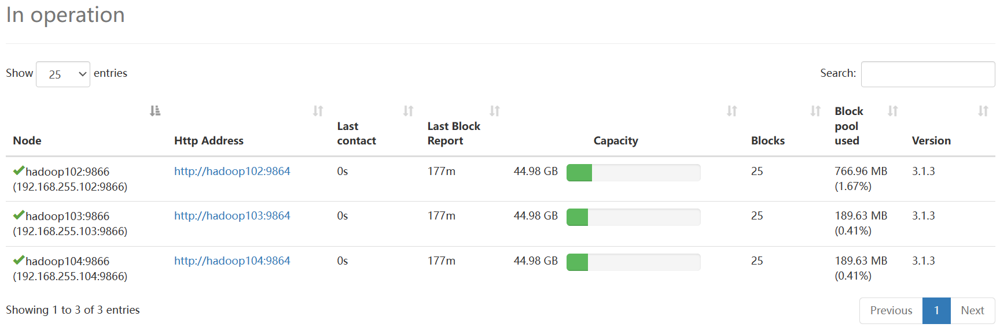
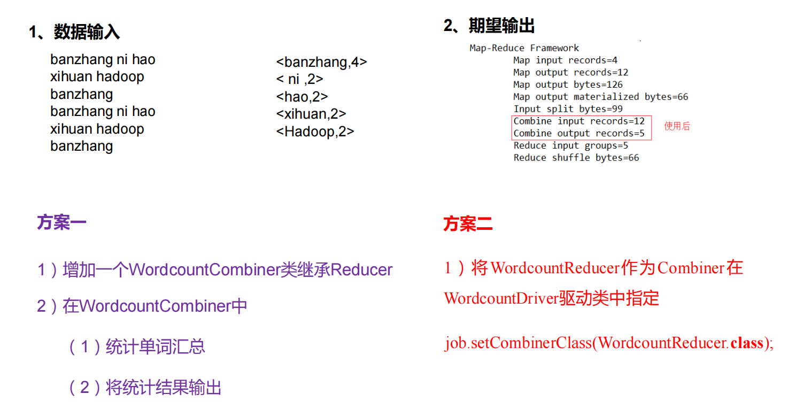

第一部分 大数据概论
第一章 大数据概念
大数据：指无法在一定时间范围内用常规软件工具进行捕捉、管理和处理的数据集合，是需要新处理模式才能具有更强的决策力、洞察发现力和流程化能力的海量、高增长和多样化的信息资产。
大数据主要解决的问题：海量数据的采集、存储和分析计算问题。
第二章 大数据特点（4V）
- Volume（大量）：一些大型企业的数据量已经接近EB量级。
- Velocity（高速）
- Variety（多样）：结构化数据和非结构化数据
- Value（价值密度低）：价值密度的高低与数据总量的大小成反比
第三章 大数据部门内组织结构
- 平台组
- Hadoop、Flume、Kafka、HBase、Spark等框架平台搭建
- 集群性能监控
- 集群性能调优
- 数据仓库组
- ETL工程师（数据清洗）
- 数据分析、数据仓库建模（建模是灵魂）
- 实时组
- 实时指标分析性能调优
- 数据挖掘组
- 算法工程师
- 推荐系统工程师
- 用户画像工程师
- 报表开发组
- JavaEE工程师
- 前端工程师
第二部分 Hadoop入门
第一章
第二章 Hadoop运行环境搭建（开发重点）
2.1 模板虚拟机环境准备
0）安装虚拟机，IP地址192.168.255.100、主机名称hadoop100、内存4G、硬盘50G
1）hadoop虚拟机配置要求如下
①测试可以上网
1 | [root@hadoop100 ~]# ping www.baidu.com |
②安装epel-release
1 | [root@hadoop100 ~]# yum install -y epel-release |
2）关闭防火墙，关闭防火墙开机自启动
1 | [root@hadoop100 ~]# systemctl stop firewalld |
3）创建atguigu用户
1 | [root@hadoop100 ~]# useradd atguigu |
密码为123456
4）配置atguigu用户具有root权限，方便后期加sudo执行root权限的命令
1 | [root@hadoop100 ~]# vim /etc/sudoers |
1 | # Allows people in group wheel to run all commands |
即添加atguigu这一行即可
5）在/opt目录下创建文件夹，并修改所属主和所属组
①在/opt目录下创建module、software文件夹
1 | [root@hadoop100 ~]# mkdir /opt/module |
②修改module、software文件夹的所有者和所属组均为tom用户
1 | [root@hadoop100 ~]# chown atguigu:atguigu /opt/module |
③查看module，software文件夹的所有者和所属组
1 | [root@hadoop100 ~]# cd /opt/ |
6）卸载虚拟机自带的JDK
1 | [root@hadoop100 opt]# rpm -qa | grep -i java | xargs -n1 rpm -e --nodeps |
.jpg)
7）重启虚拟机
2.2 克隆虚拟机
1）利用模板机hadoop100，克隆三台虚拟机：hadoop102 hadoop103 hadoop104
2）克隆详细内容参考Linux和Shell基础知识
2.3 在hadoop102安装JDK
1）卸载现有JDK
2）用Xftp传输工具将JDK导入到opt目录下面的software文件夹下面
3）在Linux系统下的opt目录中查看软件包是否导入成功
1 | [root@hadoop102 ~]# ls /opt/software |
4）解压JDK到/opt/module目录下
1 | [root@hadoop102 software]# tar -zxvf jdk-8u212-linux-x64.tar.gz -C /opt/module/ |
5）配置JDK环境变量
①新建/etc/profile.d/my_env.sh文件
1 | [root@hadoop102 ~]# sudo vim /etc/profile.d/my_env.sh |
添加如下内容
1 | JAVA_HOME |
②保存后退出
③source一下/etc/profile文件，让新的环境变量PATH生效
1 | [root@hadoop102 ~]# source /etc/profile |
6）测试JDK是否安装成功
1 | [root@hadoop102 ~]# java -version |
2.4 在hadoop102安装Hadoop
1）用Xftp传输工具将hadoop文件导入到opt目录下面的software文件夹下面
2）进入到Hadoop安装包路径下
1 | [root@hadoop102 ~]# cd /opt/software/ |
3）解压安装文件到/opt/module下面
1 | [root@hadoop102 software]# tar -zxvf hadoop-3.1.3.tar.gz -C /opt/module/ |
4）查看是否解压成功
1 | root@hadoop102 software]# ls /opt/module/ |
5）将Hadoop添加到环境变量
①获取Hadoop安装路径
1 | [root@hadoop102 hadoop-3.1.3]# pwd |
②打开/etc/profile.d/my_env.sh文件
1 | [root@hadoop102 hadoop-3.1.3]# sudo vim /etc/profile.d/my_env.sh |
在文件末尾添加如下语句
1 | HADOOP_HOME |
③让修改后的文件生效
1 | [root@hadoop102 hadoop-3.1.3]# source /etc/profile |
6）测试是否安装成功
1 | [root@hadoop102 hadoop-3.1.3]# hadoop version |
2.5 Hadoop目录结构
1）查看Hadoop目录结构
bin目录
1 | [root@hadoop102 hadoop-3.1.3]# cd bin/ |
第三章 Hadoop运行模式
Hadoop的运行模式包括：本地模式，伪分布式模式，完全分布式模式
- 本地模式：单机运行，只是用来演示一下官方案例。生产环境不用
- 伪分布式模式：也是单机运行，但是具备Hadoop集群的所有功能，一台服务器模拟一个分布式的环境。个别缺钱的公司用来测试，生产环境不用
- 完全分布式模式：多台服务器组成分布式环境。生产环境使用
3.1 本地运行模式（官方WordCount）
1）进入hadoop-3.1.3文件夹下，创建一个wcinput文件夹
1 | [root@hadoop102 ~]# cd /opt/module/hadoop-3.1.3 |
2）在wcinput文件下创建一个word.txt文件
1 | [root@hadoop102 hadoop-3.1.3]# cd wcinput/ |
3）编辑word.txt文件
1 | hadoop HDFS |
4）回到/opt/module/hadoop-3.1.3
1 | [root@hadoop102 wcinput]# cd /opt/module/hadoop-3.1.3 |
5）执行程序
1 | [root@hadoop102 hadoop-3.1.3]# hadoop jar share/hadoop/mapreduce/hadoop-mapreduce-examples-3.1.3.jar wordcount wcinput/ wcoutput |
说明：
- hadoop-mapreduce-examples-3.1.3.jar包下有多个案例，我们现在只用一个案例，案例名为wordcount
- wcinput为输入路径，wcoutput为输出路径
- mapreduce程序必须指定输入路径和输出路径，且输出路径是不存在的，如果存在，会抛出异常
6）查看结果
1 | [root@hadoop102 hadoop-3.1.3]# cd wcoutput/ |
可以看到输出路径文件夹wcoutput中有两个文件，part-r-00000为真正存储的数据，查看结果：
1 | [root@hadoop102 wcoutput]# cat part-r-00000 |
小插曲：切换用户
1 | [root@hadoop102 wcoutput]# su atguigu |
3.2 完全分布式运行模式（开发重点。至少自己安装三遍以上）
1）准备三台客户机（关闭防火墙、静态IP、主机名称）
2）安装JDK
3）配置环境变量
4）安装Hadoop
5）配置集群
6）单点启动
7）配置ssh
8）群起并测试集群
3.2.1 虚拟机准备
分别为hadoop_copy2—–hadoop102
hadoop_copy3—–hadoop103
hadoop_copy4—–hadoop104
目前的情况是：hadoop102上已经安装了jdk和hadoop，但是hadoop103和hadoop104还没有安装
3.2.2 编写一些Shell脚本
这个集群分发脚本要做的事情就是将hadoop102上的jdk和hadoop拷贝到hadoop103和hadoop104上
1）scp（secure copy）安全拷贝
①scp定义
scp可以实现服务器与服务器之间的数据拷贝。（from server1 to server2）
②基本语法
1 | scp -r $pdir/$fname $user@$host:$pdir/$fname |
③案例实操
前提：在hadoop102，hadoop103，hadoop104都已经创建好/opt/module，/opt/software两个目录，并且已经把这两个目录修改为atguigu:atguigu
（a）在hadoop102上，将hadoop102中/opt/module/jdk1.8.0_212目录拷贝到hadoop103上（推文件）
1 | [atguigu@hadoop102 ~]$ scp -r /opt/module/jdk1.8.0_212/ atguigu@hadoop103:/opt/module/ |
此时在hadoop103上可以看到jdk
1 | [atguigu@hadoop103 opt]$ cd /opt/module/ |
（b）在hadoop103上，将hadoop102中/opt/module/hadoop-3.1.3目录拷贝到hadoop103上（拉文件）
1 | [atguigu@hadoop103 ~]$ scp -r atguigu@hadoop102:/opt/module/hadoop-3.1.3 /opt/module/ |
此时：
1 | [atguigu@hadoop103 ~]$ cd /opt/module/ |
（c）在hadoop103上操作，将hadoop102中/opt/module目录下所有的目录拷贝到hadoop104上
1 | [atguigu@hadoop103 ~]$ scp -r atguigu@hadoop102:/opt/module/* atguigu@hadoop104:/opt/module/ |
复制成功：
1 | [atguigu@hadoop104 opt]$ cd /opt/module/ |
2）rsync远程同步工具
rsync主要用于备份和镜像。具有速度快、避免复制相同内容和支持符号链接的优点。
rsync和scp区别：用raync做文件的复制要比scp的速度快，rsync只对差异文件做更新。scp是把所有文件都复制过去
①基本语法
1 | rsync -av $pdir/$fname $user@$host:$pdir/$fname |
②案例实操
（a）删除hadoop103中/opt/module/hadoop-3.1.3/wcinput
1 | [atguigu@hadoop103 hadoop-3.1.3]$ rm -rf wcinput/ |
（b）同步hadoop102中的/opt/module/hadoop-3.1.3到hadoop103
1 | [atguigu@hadoop102 module]$ rsync -av hadoop-3.1.3/ atguigu@hadoop103:/opt/module/hadoop-3.1.3/ |
同步成功，在hadoop103中可以找到被删除的wcinput
1 | [atguigu@hadoop103 hadoop-3.1.3]$ ll |
3）xsync集群分发脚本
①需求：循环复制文件到所有服务器节点的相同目录下（比如我在hadoop101节点的根目录下新建了一个文件，执行xsync命令后，将该文件复制到hadoop102和hadoop103节点的根目录下）
②需求分析
1 | rsync命令原始拷贝 |
③脚本实现
1 | 在/bin目录下创建xsync文件 |
1 | 1.判断参数格式 |
1 | 修改脚本文件xsync，使其具有执行权限 |
1 | 下面正式分发环境变量，由于会出现环境拒绝，所以要在命令前加上sudo： |
1 | 目前为止，所有的服务器上都成功安装了java和hadoop（要在atguigu用户下查看） |
4）集群命令同时执行脚本
在启动集群后，用户需要使用jps命令查看各节点服务器进程的启动情况，操作起来比较麻烦，所以我们编写一个集群命令同时执行脚本，达到使用一个脚本查看所有节点上的所有进程的目的。使用该脚本，还可以执行一些需要同时在集群不同节点上运行的命令。
1 | 在/bin目录下创建xsync文件 |
1 | !/bin/bash |
1 | 修改脚本文件，使其具有执行权限 |
1 | 启动xcall.sh脚本 |
3.2.3 SSH免密登录
①有密登录（需要输入密码）
1 | [atguigu@hadoop102 ~]$ ssh hadoop103 |
②免密登录
1 | hadoop102可以免密登录hadoop103和hadoop104 |
同理，对hadoop103和hadoop104做同样的操作，使得这三个服务器之间的atguigu用户可以互相免密登录。
再将hadoop102上的root用户配置对103和104的免密登录。
3.2.4 集群配置
①集群部署规划
HDFS主要角色：NameNode，DataNode，SecindaryNameNode和Client。DataNode主要负责数据的存储工作，需要在每一台节点服务器上部署，SecindaryNameNode主要负责在集群遇到故障时候，协助NameNode进行故障恢复，所以SecindaryNameNode和NameNode不要安装在同一台服务器。
YARN主要角色：ResourceManager和NodeManager。NodeManager是单个节点服务器上的资源和任务管理器，需要在每一台节点服务器上部署，ResourceManager主要负责集群整体的资源调度工作，非常消耗内存，所以不要将其与同样消耗内存的NameNode配置在同一个节点服务器上。
| 节点服务器 | hadoop102 | hadoop103 | hadoop104 |
|---|---|---|---|
| HDFS | NameNode DateNode |
DateNode | DateNode SecindaryNameNode |
| YARN | NodeManager | NodeManager ResourceManager |
NodeManager |
②配置文件说明
Hadoop配置文件有两类：默认配置文件和自定义配置文件，默认配置文件是Hadoop源码中自带的，提供了所有参数的默认值，如果用户想要修改默认值，则需要在自定义配置文件中修改。自定义配置文件的优先级高于默认配置文件。
自定义配置文件：core-site.xml、hdfs-site.xml、yarn-site.xml、mapred-site.xml** 四个配置文件存放在
$HADOOP_HOME/etc/hadoop 这个路径上，用户可以根据项目需求重新进行修改配置。
1 | [atguigu@hadoop102 ~]$ cd /opt/module/hadoop-3.1.3/ |
③配置集群
1）配置core-site.xml文件
主要用于将分布式文件系统HDFS的NameNode的入口地址和分布式文件系统中的数据 存储于服务器本地磁盘中进行配置。
1 | 找到core-site.xml文件 |
2）配置hdfs-site.xml文件
我们主要对HDFS的属性进行配置
1 | 找到hdfs-site.xml文件 |
3）配置yarn-site.xml文件（注意：这里的配置文件按照书中的来，不按照视频的来）
1 | 找到yarn-site.xml文件 |
4）配置mapred-site.xml文件
1 | 找到mapred-site.xml文件 |
④在集群上分发配置好的Hadoop配置文件
1 | [atguigu@hadoop102 etc]$ xsync hadoop/ |
⑤配置workers文件
主节点服务器NameNode和ResourceManager的角色已经在配置文件中进行了配置，下面配置从节点服务器的角色。配置文件workers主要用于配置Hadoop分布式集群中各个从节点服务器的角色。对workers文件进行配置，将3台服务器全部指定为从节点服务器，启动DataNode和NodeManager进程。
1 | 找到workers文件 |
⑥启动集群
1）在hadoop102节点格式化NameNode
1 | 调整为root用户，否则权限不够 |
1 | 可以看到data文件和logs文件 |
1 | 进一步查看data-dfs-name-current-VERSION |
可以查看到服务器的namespaceID
2）启动HDFS
在格式化NameNode后，执行start-dfs.sh命令启动HDFS，即可同时启动所有的DataNode和SecondaryNameNode
之前要修改如下文件，否则启动失败（在102，103，104上都修改）：
1 | 换成root用户 |
可以看到所有服务器的HDFS都成功启动：
（亲尝：此时关机后HDFS会关闭，再次 [root用户下]cd /opt/module/hadoop-3.1.3/———->sbin/start-dfs.sh———->xcall.sh jps 即可启动三台服务器的HDFS并查看启动情况，YARN同理）
3）启动YARN
通过执行start-yarn.sh命令启动YARN，可以同时启动ResourceManager和所有NodeManager，需要注意，因为NameNode和ResourceManager不在同一个服务器节点上，所以必须在hadoop103上启动YARN（即在ResourceManager所在的节点上）。
1 | [root@hadoop103 hadoop-3.1.3]# sbin/start-yarn.sh |
1 | 之后我们在102上查看所有节点服务器的进程情况，可以发现与最初规划的表格内容一致 |
4）NameNode的Web端
5）YARN的Web端
⑦集群基本测试
测试Hadoop的基本功能：数据存储和数据计算，测试主要围绕文件上传、文件下载和简单计算三方面展开
1）文件上传测试
1 | 小文件上传 |
1 | 再将服务器本地的word.txt文件上传至集群的input文件夹中 |
点击即可查看文件内容，也可以下载
1 | 大文件上传测试，上传JDK安装包到Hadoop的根目录下 |
可以查看到
1 | 上传文件的存储位置 |
1 | 使用cat命令可以查看HDFS在磁盘中存储的文件内容，较小的数据块blk_1073741825即之前上传的word.txt文件 |
2）文件下载测试
可以直接在Web端操作下载
3）简单计算测试
1 | 运行官方提供的示例程序jar包中的WordCount程序 |
从YARN的Web端可以看到任务执行成功
从NameNode的Web端可以看到output文件夹
点击output文件夹可以看到结果：
当然，点击文件后面的垃圾桶按钮可以将其删除，已经设置好了root用户权限
3.2.5 NameNode格式化问题（集群挂了如何解决）
参考书，这里面不做演示
3.2.6 配置历史服务器
在Hadoop集群上执行完一个计算任务后，所有的运行信息和相关日志都会被清除，用户无法回溯查看历史任务的运行情况。为此，我们需要配置历史服务器。配置历史服务器可以在任意一个节点服务器上，我们选择102。
1 | 步骤1：打开配置文件mapred-site.xml,添加以下配置 |
1 | 步骤2：分发配置文件至其他节点服务器中 |
最后，登录历史服务器Web端（”http://hadoop102:19888/jobhistory"）
参数：
3.2.7 配置日志聚集功能
在程序运行完毕后，运行程序的节点服务器上会产生一些本地的日志文件。为了方便查看程序运行情况，进行程序调试，可以在程序运行完毕后，将程序运行的日志信息上传至HDFS中。
1 | 步骤1：配置yarn-site.xml |
1 | 步骤2：分发配置文件 |
1 | 步骤3：关闭NodeManager，ResourceManager和HistoryServer进程 |
1 | 步骤4：启动NodeManager，ResourceManager和HistoryServer进程 |
那么后续执行的程序就会有logs记录
1 | 重新运行WordCount程序，将输出文件夹改为/output2 |
查看日志：
登录历史服务器Web端（”http://hadoop102:19888/jobhistory"）可以看到两条任务列表，点击第一行的Job ID
再点击logs超链接，可以查看历史任务的运行日志
3.2.8 集群启动/停止方式总结
1）各个模块分开启动/停止（配置ssh是前提）【常用】
1 | 整体启动/停止HDFS |
2）各个服务组件逐一启动/停止
1 | 分别启动/停止HDFS组件 |
3.2.9 Hadoop集群启停脚本
想要完整地启动Hadoop集群，需要执行多个启动命令，分别启动HDFS，YARN和HistoryServer等相关进程
1 | [root@hadoop102 hadoop-3.1.3]# sbin/start-dfs.sh |
现在我们编写一个脚本，用于一次性执行以上命令，从而快速启动和关闭Hadoop集群
1 | 步骤1：在root的bin目录下创建脚本文件myhadoop.sh |
1 | 使用myhadoop.sh脚本，关闭hadoop集群 |
1 | 分发脚本，保证脚本在所有节点服务器都可以使用 |
这样每次开机之后只需要执行
1 | [root@hadoop102 bin]# myhadoop.sh start |
3.2.10 常用端口号和常用配置文件（两道面试题）
3.x : core-site.xml，hdfs-site.xml，yarn-site.xml，mapred-site.xml，workers
2.x：core-site.xml，hdfs-site.xml，yarn-site.xml，mapred-site.xml，slaves
3.2.11 关于HDFS文件分块存储的概述
首先来看一下小文件word.txt，它的Block Size为128MB，实际大小为97B，所以没有分块
再看一下大文件，它的Block Size为128MB，实际大小185.98MB，分成了两块
第四章 分布式文件系统HDFS
HDFS是Hadoop提供的分布式文件系统，使用HDFS可以在廉价的硬件设备上构建一套稳健的、可扩展的文件存储系统。
4.1 HDFS概述
4.1.1 HGFS背景及意义
HDFS（Hadoop Distributed File System，Hadoop分布式文件系统）主要用于存储文件，通过目录树定位文件，HDFS的底层是分布式的，由多台服务器联合起来对外提供文件存储服务。
HDFS通常在一次写入，多次读取的场景使用。数据长期存储于HDFS中，用于进行分析计算。一个文件经过创建，写入和关闭之后就不需要改变了。对海量数据集进行分析计算的特别之处在于，每次计算的着眼点都是数据集的整体，而不是某条数据，因此读取数据集中第一条记录的延迟并不重要，重要的是获取整体数据集的延迟。
HDFS的优点：
- 高容错性。HDFS以多副本的形式提供容错性。数据文件在被上传后，可以自动存储为多个副本，在其中一个副本丢失后，可以通过其他副本自动恢复
- 适合处理大数据。
- 数据规模：能够处理GB、TB、PB级别的数据
- 文件规模：能够处理百万规模以上的文件数量
- Hadoop可以构建在廉价机器上。通过副本机制，提高可靠性
HDFS的缺点：
- 不适合低时间延迟的数据访问。毫秒级别的数据存储做不到。HDFS是为高数据量、高吞吐的数据应用程序设计的，而这些应用必然会以提高时间延迟为代价。
- 无法高效存储大量小文件。
- HDFS会将文件的元数据（文件目录和块信息）存储在NameNode中，所以其文件存储量是受限于NameNode的内存量的。如果集群中存储了大量的小文件，则会对HDFS的存储能力造成极大损害。
- 小文件存储的寻址时间会超过读取时间，它违反了HDFS的设计目标。
- 文件不支持并发写入操作，不允许多个线程同时写文件。文件只能同时由一个写入者写入，不允许多个线程同时写文件。对于一个文件的写入操作，要以“仅添加”的模式在文件末尾写入数据，不支持在文件的任意位置进行修改。
4.1.2 HDFS的基本架构
4.1.3 HDFS文件块大小（面试重点）
另一种答案：
- 如果数据块太小，那么一个大文件会被切分成过多个数据块，从而增加整个大文件的寻址时间，也会生成过多的元数据信息，对NameNode造成更大的存储负担。
- 如果数据块太大，那么虽然可以降低整个文件的寻址时间占比，但是磁盘传输数据的时间占比会大幅提高。
4.2 HDFS的shell操作（开发重点）
Hadoop为内部的文件系统提供了多种访问接口，包括Web端页面访问接口，shell命令行访问接口，JavaAPI访问接口等等。
基本语法:
1 | hadoop fs 具体命令 OR hdfs dfs 具体命令 |
4.2.1 命令大全
1 | [root@hadoop102 hadoop-3.1.3]# hadoop fs |
4.2.2 命令行命令实操
1.准备工作
1 | （1）启动Hadoop集群 |
2. 上传
1 | (1)-moveFromLocal命令：主要用于将文件从本地文件系统剪切到HDFS中 |
1 | 执行-moveFromLocal命令，将shuguo.txt文件上传至/sanguo路径下 |
在Web端可以看到已经成功剪切到了HDFS文件中：
1 | （2）-copyFromLocal命令：主要用于从本地文件系统中上传（拷贝）文件到HDFS中 |
1 | （3）-put：等同于copyFromLocal,生产环境更常用 |
1 | （4）-appendToFile命令：主要用于将一个文件追加到已经存在的文件的末尾 |
3. 下载
1 | （1）-copyToLocal命令：主要用于将文件从HDFS中下载（拷贝）到本地文件系统中 |
4. HDFS直接操作
1 | （1）-ls命令：主要用于显示目录信息 |
1 | （5）-cp命令：主要用于将文件从HDFS中的一个路径下复制到HDFS中的另一个路径 |
1 | （6）-mv命令：主要用于在HDFS中移动（剪切）文件，可以移动多个文件，当移动多个文件时，目标路径必须是文件夹。使用该命令也可以给文件重命名。 |
可以看到/sanguo文件夹中没有了weiguo.txt和wuguo.txt，而/jinguo文件夹中出现了weiguo.txt和wuguo.txt
1 | （7）-tail命令：主要用于显示一个文件夹末尾1KB的数据 |
此时的/sanguo文件夹就变成了空文件夹
1 | （9）-rm -r命令：主要用于递归删除目录及其中的内容 |
可以看到/sanguo文件夹没有了
1 | （10）-du命令：统计文件夹的大小。如果加上-s参数，则表示只统计文件夹的大小：如果不加-s参数，则表示统计文件夹中文件的大小。 |
可以看到，/jinguo/shuguo.txt的副本变成了10个
通过该命令设置的副本数量只能记录在NameNode的元数据中，是否真的有那么多副本，取决于DataNode的数量，因为目前只有3台节点服务器，所以最多存在3个副本，只有当节点服务器增加到10台的时候，真正的副本数量才能到达10个。
4.3 HDFS的API操作
4.3.1 客户端环境准备
（1）复制目录地址D:\hadoop_windows\hadoop-3.1.0
（2）将复制内容粘贴在：此电脑-属性-高级系统设置-高级-环境变量-新建
再添加到Path目录：
（3）在hadoop-3.1.0目录下的bin文件中，双击winutils.exe文件，如果一闪而过，说明正常
maven核心程序地址（中军大帐）：D:\software\apache-maven\apache-maven-3.9.4
maven本地仓库地址（兵营）：D:\maven-repo
maven工作空间（战场）：D:\maven-workspace\spaceVideo
（4）在IDEA中创建一个Maven工程HdfsClientDemo，在该工程的pom.xml文件中添加以下依赖，其中，hadoop-client依赖主要用于执行Hadoop的相关操作，junit依赖主要用于进行方法测试，slf4j-log4j12依赖主要用于打印日志。
如果新建的工程没有resources目录，那么就new-directory-resources
添加依赖：
在HdfsClientDemo工程中的src/main/resources目录下新建一个文件log4j.properties，在该文件中添加以下内容，可以在控制台中打印日志：
1 | log4j.rootLogger=INFO, stdout |
创建com.atguigu.hdfs包，在包中创建HdfsClient类
1 | /** |
在Web端查看到相应目录，说明程序执行成功：

我们把代码进行初始化和关闭资源封装，@Test处为业务逻辑代码，@Before的代码在test之前执行，@After的代码在test之后执行
1 | public class HdfsClient { |
运行结果：
4.3.2 HDFS文件上传案例
在D盘中新建一个文件sunwukong.txt，内容为sunwukong
编写程序（只显示业务逻辑代码）：
1 | //上传 |
运行成功：
新建hdfs-site.xml文件到resources目录，编辑如下：
1 |
|
重新执行java代码可以看到，副本数变为1：
我们再将获取文件系统时的代码添加一行：
1 | configuration.set("dfs.replication","2");//表示2个副本 |
重新执行java代码可以看到，副本数变为2：
综上所述，Hadoop服务器可以在不同的位置进行参数配置，具有不同的优先级，优先级由高到低分别如下：
客户端代码中设置的值 > ClassPath中的用户自定义配置文件（resources目录下的配置文件） > 服务器中的自定义配置文件(xxx.site.xml) > 服务器中的默认配置文件(xxx-default.xml)
4.3.3 HDFS文件下载案例
目的：将/xiyou/huaguoshan/sunwukong.txt文件下载至本地文件系统中。下载功能调用FileSystem对象的copyToLocalFile()方法，此方法有如下4个参数：
- delSrc：boolean类型，用于设置是否将原文件删除
- src：Path类型，要下载的文件路径
- dst：Path类型，存储下载文件的目标路径
- useRawLocalFileSystem：boolean类型，用于设置是否启用文件校验功能（true是不校验，false是校验）
1 | //下载 |
4.3.4 HDFS文件重命名与移动案例
1 | //文件重命名 |
1 | //文件移动并更名 |
1 | //目录更名 |
4.3.5 HDFS文件删除案例
1 | //文件删除 |
/xiyou删除成功：
4.3.6 HDFS文件详情查看案例
通过调用FileSystem对象的listFiles()方法实现查看文件名称、权限、长度、块信息等，返回值是一个封装了路径下所有文件状态的迭代器。迭代器内封装的对象是FileStatus类的子类LocatedFileStatus，通过它可以获取文件的所有信息。
1 | //获取文件详细信息 |
1 | ==========hdfs://hadoop102:8020/Wudai/weiguo.txt============ |
4.3.7 HDFS文件和文件夹判断案例
1 | //判断是文件还是文件夹 |
1 | 目录: Wudai |
4.4 HDFS的读/写流程（面试重点）
4.4.1 HDFS中数据块大小（之前说过了）
4.4.2 写数据流程
1. 剖析写数据流程
2. 副本放置策略与机架感知
3. 网络拓扑距离与PipeLine的形成
4.4.3 读数据流程
4.5 HDFS的工作流程
4.5.1 NameNode和SecondaryNameNode的工作机制
4.5.2 EditLog和FsImage文件解析
1 | [root@hadoop102 ~]# cd /opt/module/hadoop-3.1.3/data/dfs/name/current/ |
1 | [root@hadoop102 current]# ll |
EditLog和FsImage文件都是二进制文件，所以不能直接查看
1. 使用oiv命令查看FsImage文件
基本语法：
1 | hdfs oiv -p 文件类型 -i 镜像文件 -o 转换后文件输出路径 |
1 | 将fsimage_0000000000000000428文件转换为fsimage.xml文件 |
1 | <inode> |
可以看到FsImage文件是由多个inode信息构成的.
FsImage文件中并没有记录数据块对应的DataNode信息，这是因为在启动集群后，NameNode会要求DataNode上报数据块信息，并且在间隔一段时间后再次上报。
2. 使用oev命令查看EditLog文件
基本语法：
1 | hdfs oev -o 文件类型 -i 编辑日志 -o 转换后文件输出路径 |
1 | 将edits_inprogress_0000000000000000433文件转换为edits.xml文件 |
1 |
|
4.5.3 检查点时间设置
4.5.4 DataNode的工作机制
HDFS中的文件实际是存储于DataNode中的，数据块存储于以blk为前缀的文件中，文件名中包含该文件存储的数据块的原始字节数，每个数据块文件都有一个名字相同但是带有.meta后缀的元数据文件，在元数据文件中存储了数据块的长度、校验和、时间戳等信息。
1 | [root@hadoop102 ~]# cd /opt/module/hadoop-3.1.3/data/dfs/data/current/BP-1662165003-192.168.255.102-1694700063570/current/finalized/subdir0/subdir0/ |
DataNode在启动后回想NameNode注册，在注册通过后，每隔一段时间都会向NameNode上报所有的数据块信息，时间间隔默认是6小时。
DataNode每隔一段时间都会扫描本节点中的数据块信息列表，时间间隔默认是6小时。
DataNode每隔3秒都会向NameNode发送心跳信息，心跳返回结果中包含NameNode对该DataNode的命令，如复制数据块、删除数据块等。如果DataNode进程挂掉，或者发生网络故障，导致DataNode无法与NameNode正常通信，那么NameNode不会立即将该节点判定为死亡，它会在一段时间（称为超时时长，默认配置为10分钟30秒）后将该节点判定为死亡。
点击HDFS的Web页面，可以查看DataNode的运行情况：

4.5.5 数据完整性
第五章 分布式计算MapReduce
5.1 MapReduce概述
5.1.1 MapReduce定义
MapReduce是一个分布式计算程序的编程框架。MapReduce的核心功能是将用户编写的业务逻辑代码和自带的默认组件整合成一个完整的分布式计算程序并且将其并发运行在一个Hadoop集群上。
1. 优点
- 易于编程
- 良好的扩展性：当计算资源不能满足海量数据的计算需求时，MapReduce可以简单地通过增加节点数量增强计算能力
- 高容错性：一个节点宕机，它可以将该节点上的计算任务转移到另一个节点运行，不至于导致这个任务运行失败
- 适合PB级以上数据的离线处理：MapReduce可以实现上千台服务器集群并发工作，提供数据处理能力。
2. 缺点
- 不擅长实时计算
- 不擅长流式计算：流式计算的输入数据是动态的，而MapReduce的输入是静态的，不能动态变化
- 不擅长DAG（有向无环图）计算：多个应用程序之间存在依赖关系，后一个应用程序是前一个应用程序的输出数据，
5.1.2 MapReduce核心思想
在运行一个完整的MapReduce程序时，在集群中会发现以下3类实例进程：
- MRAppMaster：负责整个程序的过程调度及状态协调
- MapTask：负责map阶段的整个数据处理流程
- ReduceTask：负责reduce阶段的整个数据处理流程
5.2 MapReduce编程入门
5.2.1 官方示例程序WorldCount源码
将hadoop-mapreduce-examples-3.1.3.jar下载到本地
1 | [root@hadoop102 ~]# cd /opt/module/hadoop-3.1.3/share/hadoop/mapreduce/ |
使用反编译工具，可以看到WordCount的源码：
1 | package org.apache.hadoop.examples; |
补充：常用数据序列类型
5.2.2 编程规范
用户编写的MapReduce程序主要分为三个部分：Mapper、Reducer和Driver
- Mapper组件
- 用户自定义类会继承Mapper类，并给出4个泛型，即map方法的输入键、输入值、输出键和输出值的数据情况。
- Mapper组件的输入数据是键/值对的形式，输入键是一个长整型的偏移量，输入值是一行文本；输出数据也是键/值对的形式，输出键和输出值的数据类型是由map()方法的处理逻辑决定。
- Mapper组件的业务逻辑写在map()方法中，map()方法的实现逻辑是由用户自行编写。
- map()方法对每个输入数据键/值对都只调用一次。
1 | public static class TokenizerMapper extends Mapper<Object, Text, Text, IntWritable> |
- Reducer组件
- 用户自定义类会继承Reducer类，并且给出4个泛型，即reduce()方法的输入键、输入值、输出键和输出值的数据类型。
- Reducer组件的输入数据是键/值对形式，其中，输入键和输入值的数据类型与Mapper的输出键和输出值的数据类型必须匹配。
- Reducer组件的业务逻辑写在reduce()方法中，实现逻辑由用户自定义。
- ReduceTask进程对每组相同的键/值对都只调用一次reduce()方法。有多少个key就调用多少个reduce()方法。
1 | public static class IntSumReducer extends Reducer<Text, IntWritable, Text, IntWritable> |
- Driver驱动器
- 主要负责运行整个MapReduce程序，指定MapReduce程序的执行规范，以及控制整个MapReduce程序的运行。在这部分中，我们首先构建一个Job对象，通过Job对象指定输入数据和输出数据的路径，指定MapReduce程序的Mapper组件和Reduce组件，指定输出键和输出值的数据类型。相当于YARN集群的客户端，用于提交我们整个程序到YARN集群，提交的是封装了MapReduce程序相关运行参数的job对象。
5.2.3 WordCount案例实操
1. 需求说明
给hello.txt文件统计词频
1 | atguigu atguigu |
期望得到：
1 | atguigu 2 |
2. 分析
3. 环境准备
使用IDEA新建一个Maven工程，命名为“MapReduceDemo”，在pom.xml文件中添加以下依赖
1 | <dependencies> |
在项目的 src/main/resources 目录下，新建一个文件，命名为“log4j.properties”，在文件中填入：
1 | log4j.rootLogger=INFO, stdout |
编写程序：三个类：
1 | //编写Mapper类 |
1 | //编写Reduce类 |
1 | //编写Driver驱动器 |
4. 本地测试
运行Driver类的main()方法，在输出目录output中查看如下输出结果：
可以发现有四个文件，其中真正的数据结果文件是part-r-00000，文件内容如下：
1 | atguigu 2 |
已经对原文件进行了词频统计
5. 集群测试
在pom.xml文件中添加打包插件依赖：
1 | <plugin> |
因为程序最重要被提交到集群上运行，所以输入路径和输出路径不是在代码中设置的，而是通过参数传入的，将输入路径和输出路径的设置代码修改如下：
1 | FileInputFormat.setInputPaths(job,new Path(args[0])); |
将程序打包成jar包，操作如下：
将此jar包复制到桌面并重命名为WC.jar，并将该jar包复制到/opt/module/hadoop-3.1.3/路径下
1 | [root@hadoop102 hadoop-3.1.3]# ll |
启动hadoop集群；
执行WC.jar
1 | [root@hadoop102 hadoop-3.1.3]# hadoop jar WC.jar com.atguigu.mapreduce.wordcount2.WordCountDriver /input /output2 |
程序执行成功：
5.3 Hadoop的序列化
5.3.1 序列化的概念
序列化是指将内存中的对象转换成字节序列（或其他数据传输协议），以便将其存储于磁盘中（持久化存储）或进行网络传输的过程。
反序列化是指将收到的字节序列（或其他数据传输协议）或磁盘中的持久化数据转换成内存中对象的过程。
通过序列化可以将对象在进程之间进行通信，以及使对象持久化存储。
Java具有一套序列化机制（Writable），但是Java的序列化机制是一个重量级的序列化框架（Serializable）。一个对象在被序列化后，会附带很多额外信息，不便于在网络中高效传输。所以，Hadoop开发了一套自己的序列化机制。
Hadoop序列化机制的特点：
- 紧凑：紧凑的格式有助于高效使用存储空间，充分利用网络带宽
- 快速：序列化和反序列化的性能开销很小，可以实现进程之间的快速通信
- 互操作：统一的序列化框架可以支持多语言和服务器的交互
5.3.2 Writable接口
Hadoop使用的序列化接口是Writable，在Writable接口中定义了两个方法，分别是write()方法和readFields()方法。write()方法主要用于将类中的信息写入DataOutput二进制流，readFields()方法主要用于从DataInput二进制流中读取信息。
- write()方法：序列化，内存——–>磁盘
- readFields()方法：反序列化，磁盘——–>内存
1 | .Public |
Hadoop为java中的基本数据类型提供了Writable接口的实现类，Writable接口的所有实现类都提供了get()方法和set()方法，分别用于获取和存储所封装的值。
用户不仅可以使用Hadoop提供的序列化数据类型，还可以自定义Writable接口的实现类，用于在Hadoop环境中实现序列化。
5.3.3 序列化案例实操
（1）需求分析
有一个数据文件，存储了大量的手记号码、IP地址、浏览页面、上行流量、下行流量等信息，要求统计每个手记号码耗费的总上行流量、总下行流量、总流量
map输出kv和reduce输入kv：
1 | K(Text) V(bean对象) |
reduce输出kv：
1 | K(Text) V(bean对象) |
（2）实现思路分析
在map阶段对接收的每行数据都进行切分，抽取关键字段（手记号码、上行流量、下行流量、总流量），将其封装成FlowBean对象，并且将手机号码字段设置为key，然后将数据输出。在reduce阶段，每次接收到同一个手机号码的一组FlowBean对象，都对这组FlowBean对象进行汇总，计算得到总流量，将手机号码字段设置为key，然后将数据输出。
（3）编写MapReduce程序
①编写FlowBean类，使其继承Writable接口：
1 | package com.atguigu.mapreduce.writable; |
②编写Mapper接口：
1 | package com.atguigu.mapreduce.writable; |
③编写Reducer组件，代码如下：
1 | package com.atguigu.mapreduce.writable; |
④编写Driver驱动类，代码如下：
1 | package com.atguigu.mapreduce.writable; |
⑤运行Driver类中的main()方法，查看输出文件中的内容。由此可见，JavaBean对象通过实现Writable接口，可以实现进程之间的通信。
5.4 MapReduce框架原理之InputFormat数据输入
MapReduce计算框架将数据的计算过程分为数据输入阶段、map阶段、reduce阶段和数据输出阶段。
在数据输入阶段，我们需要考虑如何划分数据，可以在提高任务并发度的同时提高集群性能。
5.4.1 切片与MapTask并行度决定机制
MapTask的并行度决定map阶段的任务处理并发度，进而影响整个Job的处理速度。
- 数据块：Block是HDFS物理上把数据分成若干个数据块，数据块是HDFS的数据存储单位。
- 数据切片：指在逻辑上把输入数据进行切分，并不会在物理层面上将输入数据切分成片。数据切片是MapReduce程序计算输入数据的单位，一个数据切片可以对应启动一个MapTask。
假设一个数据集由两个文件构成，这两个文件大小分别为300MB和100MB。假设将数据切片大小设置为128MB，那么会将这两个文件切分成4片，切片信息如下：
- split1：0~128MB
- split2：129~256MB
- split3：257~300MB
- split4：1~100MB
数据切片大小与数据块大小正好吻合，每个数据块都是一个数据切片：
.jpg)
假设将数据切片大小设置为100MB，那么：
- split1：0~100MB
- split2：101~200MB
- split3：201~300MB
- split4：0~100MB
这时候数据切片大小与数据块大小不吻合：
.jpg)
总结：
- 一个Job的Map阶段并行度是由客户端在提交Job时的切片数决定的
- 默认情况下，数据切片大小与数据块大小相同，或者是数据块大小的倍数，即128MB或128MB的倍数（原因：与数据块大小相同的数据切片，可以保证一个MapTask处理的任务正好是一个数据块，Hadoop可以将该MapTask发送给数据块所在的节点服务器，实现计算的数据本地化，提高计算性能，节省带宽资源）
- 每一个切片分配一个MapTask并行实例处理。
- 切片时不考虑数据整体，只会针对数据集中的每个文件单独进行切片。
5.4.2 Job提交流程源码和FileInputFormat切片源码详解
1. Job提交流程源码详解
在编写WordCount程序的代码时，在Driver类中，最后会通过Job对象job调用waitForCompletion()方法提交任务
1 | boolean result = job.waitForCompletion(true); |
去看waitForCompletion()方法源码，可以发现，最终调用submit()方法：
1 | public boolean waitForCompletion(boolean verbose |
在submit()方法中，首先通过调用connect()方法建立连接，在建立连接时，首先通过现有配置文件获取Cluster对象，同时判断是本地运行环境还是YARN集群运行环境：
1 | // 1 建立连接 |
在建立连接后，创建JobSubmiter的实例化对象submitter，submitter对象最终调用submitJobInternal()方法完成任务
1 | // 2 提交 job |
进一步追溯submitJobInternal()方法，该方法中关键步骤源码如下：
1 | // 1）创建给集群提交数据的 Stag 路径 |
2. FileInputFormat切片源码详解
分析FileInputFormat类的源码。FileInputFormat类是所有使用文件作为其数据源的InputFormat实现类的基类，该类主要实现了两个功能，一个是指定作业的输入文件位置，另一个是将输入文件切分成数据分片的代码实现。
在提交任务时，使用以下代码指定输入文件路径
1 | FileInputFormat.setInputPaths(job,new Path(args[0])); |
查看FileInputFormat类源码，搜索getSplits()方法，对文件的分片逻辑主要体现在这个方法的实现中：
1 | public List<InputSplit> getSplits(JobContext job) throws IOException { |
1 | //计算数据切片大小的重要公式： |
| 属性 | 数据类型 | 默认值（单位：字节） | 描述 |
|---|---|---|---|
| mapreduce.input.fileinputformat.split.minsize | int | 1 | 一个文件分片中最小的有效字节数 |
| mapreduce.input.fileinputformat.split.maxsize | long | long.MAX_VALUE，即9223372036854775807 | 一个文件分片中最大的有效字节数 |
| dfs.blocksize | long | 134217728，即128MB | HDFS中数据块的大小 |
在默认情况下，minsize<blocksize<maxsize，所以blocksize属性值表示默认的数据切片大小。在理论上，我们可以通过调整这3个关键属性的值调整数据切片的大小，但是与数据块大小相同的数据切片大小是最合理的。
切片大小的相关设置如下：
- maxsize（数据切片的最大值）：如果该属性的值比blocksize属性的值小，则会让数据切片变小，相当于配置这个属性的值
- minsize（数据切片的最小值）：如果该属性的值比blocksize属性的值大，则会让数据切片大小变得比blocksize属性的值还大
5.4.3 FileInputFormat切片机制总结
1. 切片机制
2. 案例分析
3. 参数设置
略
5.4.4 TextInputFormat
1.FileInputFormat接口的实现类
在运行 MapReduce 程序时，输入的文件格式包括：基于行的日志文件、二进制格式文件、数据库表等。那么，针对不同的数据类型，MapReduce 是如何读取这些数据的呢？
FileInputFormat 常见的接口实现类包括：TextInputFormat、KeyValueTextInputFormat、NLineInputFormat、CombineTextInputFormat 和自定义 InputFormat 等。
2. TextInputFormat
TextInputFormat是进行普通文件输入的默认FileInputFormat接口实现类，可以按行读取每条记录，读取的键是该行在整个文件中的起始字节偏移量，数据类型为LongWritable类型；读取的值是该行的内容，不包括任何行终止符（换行符和回车符），数据类型为Text类型。
以下是一个示例，比如，一个分片包含了如下 4 条文本记录。
1 | Rich learning form |
每条记录表示为以下键/值对：
1 | (0,Rich learning form) |
5.4.5 CombineTextInputFormat切片机制
框架默认的 TextInputFormat 切片机制是对任务按文件规划切片（一个文件，一个切片），不管文件多小，都会是一个单独的切片，都会交给一个 MapTask，这样如果有大量小文件，就会产生大量的MapTask，处理效率极其低下。
CombineTextInputFormat 用于小文件过多的场景，它可以将多个小文件从逻辑上规划到一个切片中，这样，多个小文件就可以交给一个 MapTask 处理。
通过以下代码设置数据切片的最大值：
1 | CombineTextInputFormat.setMaxInputSplitSize(job, 4194304);// 4m |
CombineTextInputFormat切片机制的具体切片过程分为两部分，分别为虚拟存储过程和切片过程：
1. 虚拟存储过程
将输入目录所有文件的大小 filesize 依次与设置的 setMaxInputSplitSize 值进行比较：
filesize <= setMaxInputSplitSize，在逻辑上将其划分为一个虚拟存储块；
filesize > 2*setMaxInputSplitSize，以setMaxInputSplitSize值划分第一个虚拟存储块；
setMaxInputSplitSize < filesize <= 2*setMaxInputSplitSize，将文件均分为两个虚拟存储块；
2. 切片过程
判断虚拟存储块的大小和setMaxInputSplitSize的大小：
虚拟存储块大小 >= setMaxInputSplitSize，将其单独划分为一个数据切片；
虚拟存储块大小 < setMaxInputSplitSize，将与其下一个虚拟存储块进行合并，共同划分为一个数据切片；
.jpg)
5.4.6 CombineTextInputFormat案例教程
下面使用CombineTextInputFormat作为MapReduce的InputFormat，测试其对小文件的处理效果。准备4个小文件作为输入文件，期望将4个小文件合并成一个数据切片进行统一处理。4个输入文件的大小如下：
1 | a.txt 1.7MB |
不进行任何处理，使用原来的WordCount程序，直接将这4个文件输入
1 | FileInputFormat.setInputPaths(job,new Path("D:\\尚硅谷大数据学习资料（无视频）\\Hadoop 3.x\\资料\\资料\\11_input\\inputcombinetextinputformat")); |
观察控制台中打印的日志，可以发现产生了4个数据切片（4个文件就有4个切片）
1 | 2023-09-27 17:19:42,685 INFO [org.apache.hadoop.mapreduce.JobSubmitter] - number of splits:4 |
在 WordcountDriver 中增加如下代码，运行程序
1 | // 如果不设置 InputFormat，它默认用的是 TextInputFormat.class |
可以看到，运行结果为3个切片
1 | 2023-09-27 17:25:28,331 INFO [org.apache.hadoop.mapreduce.JobSubmitter] - number of splits:3 |
1 | // 如果不设置 InputFormat，它默认用的是 TextInputFormat.class |
可以看到，运行结果为1个切片
1 | 2023-09-27 17:27:48,003 INFO [org.apache.hadoop.mapreduce.JobSubmitter] - number of splits:1 |
5.5 MapReduce框架原理之shuffle机制
MapReduce执行排序操作并将map阶段输出的数据传递给reduce阶段的过程称为shuffle，shuffle阶段是MapReduce程序的核心阶段。
5.5.1 shuffle机制

5.5.2 分区
1. 问题引出
要求将统计结果按照条件输出到不同的分区（Partition）中，比如将统计结果按照手记归属地输出到不同分区中。
2. 默认分区器HashPartitioner
默认分区器是根据key的hashCode对ReduceTask的数量取模得到的。用户没法控制哪个key存储于哪个分区中，源码：
1 | public class HashPartitioner<K, V> extends Partitioner<K, V> { |
一个小实验：我们在最初的WordCount程序中的WordCountDriver类中添加如下代码：
1 | job.setNumReduceTasks(2);//将ReduceTask个数设置为2，则最后会产生两个结果文件 |
运行程序，可以发现最后是两个文件：
这种情况下分区标准只和hashcoed值有关，如果想自定义分区方式，只能自定义分区器。
3. 自定义分区器
①自定义继承Partitioner接口的类，需要指定两个泛型，分别是该自定义分区器要应用的MapReduce程序中的Mapper输出键和输出值的数据类型；并且需要重写getPartition()，在该方法中编写代码逻辑，实现通过不同的键返回分区值，分区值是int类型的数据。例如，如果希望最终得到5个分区，则返回0~4的整数分区值。
1 | public class CustomPartitioner extends Partitioner<Text, FlowBean> { |
②在Job驱动中，设置自定义Partitioner
1 | job.setPartitionerClass(CustomPartitioner.class); |
③自定义Partition后，要根据自定义Partitioner的逻辑设置相应数量的ReduceTask，如果自定义分区器中的逻辑指定返回的分区值为0~4，则需要将ReduceTask的数量设置为5个
1 | job.setNumReduceTasks(5); |
4. 分区总结
- 如果ReduceTask的数量> getPartition的结果数，则会多产生几个空的输出文件part-r-000xx；
- 如果1<ReduceTask的数量<getPartition的结果数，则有一部分分区数据无处安放，会Exception报错；
- 如 果ReduceTask的数量=1，则不管MapTask端输出多少个分区文件，最终结果都交给这一个ReduceTask，最终也就只会产生一个结果文件 part-r-00000；
- 分区号必须从零开始，逐一累加。
总结：尽量使ReduceTask的数量与getPartition()方法的返回值保持一致
5.5.3 分区案例实操
1. 需求分析
在统计每个手机号码耗费的总上行流量、总下行流量、总流量的基础上，使用自定义分区器，将统计结果按照手机归属地的省份输出到不同的文件中。
①输入数据：
②期望效果：
把手机号码开头为136、137、138、139的数据分别存储于4个独立文件中，将其他数据存储于1个文件中。
2. 需求实现
增加自定义分区器ProvincePartitioner，编写分区逻辑：
1 | public class ProvincePartitioner extends Partitioner<Text,FlowBean> {//泛型要和Map的输出键值保持一致 |
在驱动类FlowDriver，配置自定义分区器，并设置ReduceTask的数量：
1 | //指定自定义分区类 |
设置完毕后，重写运行程序，查看运行过程中ReduceTask的数量及输出的文件数量，输出文件如下：
可以发现，成功分区
如果将ReduceTask的数量设置为1个，重新运行程序，再次查看输出文件夹，发现只输出了一个结果文件，实际上分区失效
将ReduceTask的数量设置为6个，重新运行程序，再次查看输出文件夹，共输出了6个结果文件，但其中一个是空文件
5.5.4 WritableComparable排序
MapTask和ReduceTask均会对数据按照key进行排序。该操作属于Hadoop的默认行为。任何应用程序中的数据均会被排序，而不管逻辑上是否需要。
默认排序是按照字典顺序排序，且实现该排序的方法是快速排序。
对于MapTask，它会将处理的结果暂时放到环形缓冲区中，当环形缓冲区使用率达到一定阈值后，再对缓冲区中的数据进行一次快速排序，并将这些有序数据溢写到磁盘上，而当数据处理完毕后，它会对磁盘上所有文件进行归并排序。对于ReduceTask，它从每个MapTask上远程拷贝相应的数据文件，如果文件大小超过一定阈值，则溢写磁盘上，否则存储在内存中。如果磁盘上文件数目达到一定阈值，则进行一次归并排序以生成一个更大文件；如果内存中文件大小或者数目超过一定阈值，则进行一次合并后将数据溢写到磁盘上。当所有数据拷贝完毕后，ReduceTask统一对内存和磁盘上的所有数据进行一次归并排序。
以上过程中提到的排序都是针对数据的键进行的，在不进行配置的情况下，必须使用Hadoop提供的序列化类，如Text类，IntWritable类等。若用户使用自定义JavaBean作为键，则需要使其继承（实现）WritableComparable接口，重写该接口中的**compareTo()**方法，定义比较逻辑。
排序分类：
- 部分排序（生产环境中常用）：MapReduce根据输入记录的键对数据集排序。保证输出的每个文件内部有序。
- 全排序（生产环境下慎用）：最终输出结果只有一个文件，并且文件内部有序。实现方式是只设置一个ReduceTask。但该方法在处理大型文件时效率极低，因为一台机器处理所有文件，完全丧失了MapReduce所提供的并行架构。
- 二次排序（自定义排序）：在自定义排序过程中，如果compareTo()方法中的判断条件为两个即为二次排序。
5.5.5 WritableComparable排序案例实操（全排序）
1. 需求分析
针对以下输出结果进行倒序排列
期望输出结果：
1 | 13509468723 7335 110349 117684 |
2. 实现思路分析
将FlowBean对象作为map阶段的输出键，然后使FlowBean继承WritableComparable接口，在重写compareTo()方法时，编写按照总流量倒序排列的代码逻辑。
在map()方法中，将FlowBean对象作为键，将手机号码作为值输出，即可按照FlowBean对象中的总流量进行排序。
在reduce()方法中，输入值是以迭代器的形式给出的，所以我们遍历这个迭代器，与输入键重新组合并交换位置输出，使最后输出的数据依然是手机号码在前、流量在后，与期望输出数据相同。
3. 代码实现
1 | //使FlowBean继承WritableComparable接口，重写compareTo()方法 |
1 | //编写Mapper类，在map()方法中将FlowBean作为键、将手机号码作为值输出 |
1 | //编写Reducer类，输入数据的泛型需要与Mapper类输出数据的泛型保持一致，输出键的泛型为FlowBean，输出值的泛型为Text |
1 | //编写Driver类，进行必要设置 |
运行程序，查看输出结果，可以看到按照总流量的倒序排列了：
修改compareTo()方法，使得总流量相同时候，按照上行流量进行倒序排序
1 | //重写compareTo方法 |
运行程序，查看输出结果：
5.5.6 WritableComparable排序案例实操（区内排序）
1. 需求分析
要求每个省份（136，137，138，139……）手机号输出的文件中按照总流量内部排序
2. 实现思路分析
增加自定义分区器，按照省份手机号码设置分区
3. 案例实操
1 | //自定义分区器ProvincePartitioner2，指定泛型需要与Mapper类输出数据的泛型保持一致 |
1 | //编写驱动类FlowDriver，配置自定义分区器ProvincePartitioner2 |
重新运行程序，查看输出结果：生成了5个结果文件，分别查看5个结果文件内容，都是按照总流量降序排列的
5.5.7 Combiner合并
- Combiner是MR程序中Mappe和Reducer之外的一种组件
- Combiner组件的父类就是Reducer
- Combiner和Reducer的区别在于运行的位置，Combiner是在每一个MapTask所在的节点运行，Reducer是接收全局所有Mapper的输出结果
- Combiner的意义就是对每一个MapTask的输出进行局部汇总，以减小网络传输量
- Combiner能够应用的前提是不影响最终的业务逻辑，而且Combiner的输出kv应该跟Reducer的输入kv类型要对应起来。
5.5.8 Combiner合并案例实操
1. 需求分析
对输入文件进行词频统计，在统计过程中，使用Combiner组件对每个MapTask的输出数据进行局部汇总，从而减少网络传输数据量
2. 实现思路分析

3. 案例实操——方案1
增加一个WordCountCombiner类，使其继承Reducer类，重写reduce()方法
1 | public class WordCountCombiner extends Reducer<Text, IntWritable,Text, IntWritable> { |
在WordCountDriver驱动类中配置Combiner组件
1 | job.setCombinerClass(WordCountCombiner.class); |
4. 案例实操——方案2
在WordCountDriver驱动类中指定WordCountReducer类作为Combiner组件
1 | job.setCombinerClass(WordCountReducer.class); |
运行程序，观察控制台中打印的日志：

实际上，在以后，如果Combiner不影响最终的业务逻辑就可以用它，并且都用方案2
5.6 MapReduce框架原理之OutputFormat数据输出
5.6.1 OutputFormat接口的实现类
OutputFormat接口是MapReduce输出类的基类，几种该接口的常见实现类：
- TextOutputFormat类
- SequenceFileOutputFormat类
- 自定义OutputFormat类（注意：之前没有讲自定义InputFormat类）
当用户需要将数据输出至MySQL、HBase等存储框架中时，Hadoop就不能够提供对应的OutputFormat类了，需要用户自定义OutputFormat类，步骤如下（感觉挺麻烦）：
- 自定义一个类，使其继承RecordWriter类，在该类中创建文件的输出流及文件的输出方式。
- 自定义一个类，使其继承FileOutputFormat类，重写getRecordWriter()方法，在getRecordWriter()方法中创建自定义的RecordWriter类并返回。
5.6.2 自定义OutputFormat类的案例实操
1. 需求分析
过滤输入的日志信息，将包含atguigu字段的网址数据输出到…:/atguigu.log文件，将不包含atguigu字段的网址数据输出到…:/other.log文件中。
2. 案例实操
（1）编写LogMapper类，在map()方法中不对原数据进行任何处理，直接将一行数据写出
1 | public class LogMapper extends Mapper<LongWritable, Text, Text, NullWritable> { |
（2）编写LogReducer类，在reduce()方法中不进行任何特殊处理，只将数据迭代写出即可。
1 | public class LogReducer extends Reducer<Text, NullWritable, Text, NullWritable> { |
（3）自定义一个LogOutputFormat类，使其继承FileOutputFormat类，重写getRecordWrite()方法。getRecordWrite()方法主要用于创建一个RecordWriter对象并返回。RecordWriter类需要用户自定义
1 | public class LogOutputFormat extends FileOutputFormat<Text, NullWritable> {//它的泛型和Reduce输出的泛型一致 |
（4）编写LogRecordWriter类，使其继承RecordWriter类，在构造方法中创建文件输出流，在write()方法中编写对文件内容进行判断并分流写出的逻辑代码
1 | public class LogRecordWriter extends RecordWriter<Text, NullWritable> { |
（5）编写LogDriver类，将OutputFormat类设置为自定义的LogOutputFormat类
1 | public class LogDriver { |
（6）运行程序，观察输出结果，发现生成了两个结果文件，分别为atguigu.log文件和other.log文件
而D:\尚硅谷大数据学习资料（无视频）\Hadoop 3.x\资料\资料\output8中只有一个运行成功的标记文件：
5.7 MapReduce工作流程（面试重点）
5.7.1 MapTask工作机制

（1）Read阶段：MapTask 通过 InputFormat 获得的 RecordReader，从输入 InputSplit 中解析出一个个 key/value。
（2）Map阶段：该节点主要是将解析出的 key/value 交给用户编写 map()函数处理，并产生一系列新的 key/value。
（3）Collect 收集阶段：在用户编写 map()函数中，当数据处理完成后，一般会调用OutputCollector.collect()输出结果。在该函数内部，它会将生成的 key/value 分区（调用Partitioner），并写入一个环形内存缓冲区中。
（4）Spill 阶段：即“溢写”，当环形缓冲区满后，MapReduce 会将数据写到本地磁盘上，生成一个临时文件。需要注意的是，将数据写入本地磁盘之前，先要对数据进行一次本地排序，并在必要时对数据进行合并、压缩等操作。
溢写阶段详情：
步骤 1：利用快速排序算法对缓存区内的数据进行排序，排序方式是，先按照分区编号Partition 进行排序，然后按照 key 进行排序。这样，经过排序后，数据以分区为单位聚集在一起，且同一分区内所有数据按照 key 有序。
步骤 2：按照分区编号由小到大依次将每个分区中的数据写入任务工作目录下的临时文件 output/spillN.out（N 表示当前溢写次数）中。如果用户设置了 Combiner，则写入文件之前，对每个分区中的数据进行一次聚集操作。
步骤 3：将分区数据的元信息写到内存索引数据结构 SpillRecord 中，其中每个分区的元信息包括在临时文件中的偏移量、压缩前数据大小和压缩后数据大小。如果当前内存索引大小超过 1MB，则将内存索引写到文件 output/spillN.out.index 中。
（5）Merge阶段：当所有数据处理完成后，MapTask 对所有临时文件进行一次合并，以确保最终只会生成一个数据文件。
当所有数据处理完后，MapTask 会将所有临时文件合并成一个大文件，并保存到文件output/file.out 中，同时生成相应的索引文件 output/file.out.index。
在进行文件合并过程中，MapTask 以分区为单位进行合并。对于某个分区，它将采用多轮递归合并的方式。每轮合并 mapreduce.task.io.sort.factor（默认 10）个文件，并将产生的文件重新加入待合并列表中，对文件排序后，重复以上过程，直到最终得到一个大文件。
让每个 MapTask 最终只生成一个数据文件，可避免同时打开大量文件和同时读取大量小文件产生的随机读取带来的开销。
5.7.2 ReduceTask工作机制

（1）Copy 阶段：ReduceTask 从各个 MapTask 上远程拷贝一片数据，并针对某一片数据，如果其大小超过一定阈值，则写到磁盘上，否则直接放到内存中。
（2）Sort 阶段：在远程拷贝数据的同时，ReduceTask 启动了两个后台线程对内存和磁盘上的文件进行合并，以防止内存使用过多或磁盘上文件过多。按照 MapReduce 语义，用户编写 reduce()函数输入数据是按 key 进行聚集的一组数据。为了将 key 相同的数据聚在一起，Hadoop 采用了基于排序的策略。由于各个 MapTask 已经实现对自己的处理结果进行了局部排序，因此，ReduceTask 只需对所有数据进行一次归并排序即可。
（3）Reduce 阶段：reduce()函数将计算结果写到 HDFS 上。
5.7.3 ReduceTask并行度决定机制
MapTask并行度由切片个数决定，切片个数由输入文件和切片规则决定
思考：ReduceTask并行度由谁决定？
（1）设置ReduceTask并行度（个数）
ReduceTask 的并行度同样影响整个 Job 的执行并发度和执行效率，但与 MapTask 的并发数由切片数决定不同，ReduceTask 数量的决定是可以直接手动设置：
1 | // 默认值是 1，手动设置为 4 |
（2）实验：测试ReduceTask多少合适
实验环境：一个NameNode，16个DataNode，CPU：8GHz，内存2G
（3）一些注意事项
- ReduceTask=0，表示没有Reduce阶段，输出文件个数和Map个数一致。
- ReduceTask默认值就是1，所以输出文件个数为一个。
- 如果数据分布不均匀，就有可能在Reduce阶段产生数据倾斜
- ReduceTask数量并不是任意设置，还要考虑业务逻辑需求，有些情况下，需要计算全局汇总结果，就只能有1个ReduceTask。
- 具体多少个ReduceTask，需要根据集群性能而定。
- 如果分区数不是1，但是ReduceTask为1，是否执行分区过程。答案是：不执行分区过程。因为在MapTask的源码中，执行分区的前提是先判断ReduceNum个数是否大于1。不大于1肯定不执行。
5.7.4 MapTask & ReduceTask源码解析
以分区案例代码为例进行源码分析：
FlowBean类：
1 | public class FlowBean implements Writable { //1.继承Writable接口 |
FlowMapper类：
1 | public class FlowMapper extends Mapper<LongWritable, Text, Text, FlowBean> { |
FlowReducer类：
1 | public class FlowReducer extends Reducer<Text, FlowBean, Text, FlowBean> { |
ProvincePartitioner类：
1 | public class ProvincePartitioner extends Partitioner<Text,FlowBean> {//泛型要和Map的输出键值保持一致 |
FlowDriver类：
1 | public class FlowDriver { |
在FlowMapper中的context.write(outK, outV);打上断点：
在FlowReducer中的context.write(key,outV);打上断点：
检查输出路径存在后，进行debug，运行到FlowMapper类中的context.write方法，强制进入：
再次强行进入mapContext.write()方法：
再次强行进入output.write()方法：
进入getPartition()方法，即为我们自定义的方法：
跳出该方法继续向下执行，进入collect环形缓冲区：
继续向下走：
1 | try { |
然后依次出write()方法，output.wirte()，mapContext,write()，直至出contxet.write()方法：
至此，一行内容写完了。以此类推，一行一行写入，直到写入最后一行“13568436656”，进入方法查看：
之后一步步在退出方法：
可以看到，最后一步退出循环，进入到cleanup(context)中：
cleanup什么都不干，跳出run()方法，继续执行MapTask类：
强行进入output.close(mapperContext):
强行进入collector.flush()，在其中的源码中可以发现sortAndSpill()方法：
进入发现：
再次进入：
其中sortInternal()就是快排的逻辑：
1 | private static void sortInternal(final IndexedSortable s, int p, int r, |
至此排序完成，回到sorter.sort()后的代码：
开始循环遍历每一个分区：
当0号分区写成功后:
在D:\tmp\hadoop-WangYuhan\mapred\local\localRunner\WangYuhan\jobcache\job_local1485257078_0001\attempt_local1485257078_0001_m_000000_0\output文件夹中的可以看到0号分区的溢写情况：
剩下的略吧，源码不是很重要，个人觉得对于数仓开发来说是浪费时间
5.8 Join
如果连接操作发生在map阶段，则称之为Map Join；如果连接操作发生在reduce阶段，则称之为Reduce Join。
5.8.1 Reduce Join
该操作的比较常见的的连接操作，并且对数据集没有特定要求。
map阶段的主要工作：首先为来自不同表或文件的key/value对打标签，用于区别不同来源的记录；然后将连接字段作为key，将其他部分和新加的标志作为value,最后进行输出。
reduce阶段的主要工作：在shuffle过程中的reduce端，将连接字段作为key的分组已经完成，在reduce方法中将每个分组中来自不同文件的记录（在map阶段已经打标签）分开并进行合并。
代码实现：
（1）创建订单数据表和商品信息表合并后的TableBean类：
1 | public class TableBean implements Writable {//实现Writable，从而完成序列化 |
（2）编写TableMapper类，需要重写setup()方法。（重写该方法的目的在于通过Context对象获取文件名称）。重写map()方法，针对不同的文件，对数据进行适当的切分操作，并且将切分结果写入TableBean对象作为value、将商品编号作为key发送出去
1 | public class TableMapper extends Mapper<LongWritable, Text, Text, TableBean> { |
（3）编写TableReducer类，重写reduce()方法，在reduce()方法中，先对本组数据按照来源进行分类，分成订单信息和商品信息，再将商品信息中的商品名称写入订单信息
1 | public class TableReducer extends Reducer<Text, TableBean, TableBean, NullWritable> { |
（4）编写TableDriver类，进行必要的配置
1 | public class TableDriver { |
运行程序，查看输出结果：
缺点：这种方式中，合并的操作是在 Reduce 阶段完成，Reduce 端的处理压力太大，Map节点的运算负载则很低，资源利用率不高，且在 Reduce 阶段极易产生数据倾斜。（如果某个商品编号的订单数据远远超过其余商品编号的订单数据，那么处理该商品编号的ReduceTask的处理时间会大大延长）
解决方案：Map 端实现数据合并。
5.8.3 Map Join
- 适用场景
Map Join适用于一个表很小（缓存到内存中，以至于可以分发至集群中的每个节点上），另一张表很大的情景。
- 优点
再map端缓存多个表，提前处理业务逻辑，从而增加map端业务，减轻reduce端的数据处理压力，可以尽可能地减少数据倾斜
- 具体方法
（1）在Mapper组件的setup()方法中，将文件读取到缓存集合中（先）；在map()方法中，实现数据连接操作（后）
（2）在Driver类驱动类中加载缓存
1 | //缓存普通文件到 Task 运行节点。 |
- 代码实现
（1）在MapJoinDriver驱动类中添加缓存文件。因为所有的数据连接操作都在Mapper组件中完成，不需要Reducer组件，所以将ReduceTask的数量设置为0个。
1 | public class MapJoinDriver { |
（2）在MapJoinMapper类中的setup()方法中读取缓存文件，将缓存文件中的数据写入HashMap，在map()方法中编写数据连接的逻辑代码
1 | public class MapJoinMapper extends Mapper<LongWritable, Text, Text, NullWritable> { |
运行程序，查看输出结果：
5.9 数据清洗
ETL，是英文 Extract-Transform-Load 的缩写，用来描述将数据从来源端经过抽取（Extract）、转换（Transform）、加载（Load）至目的端的过程。ETL 一词较常用在数据仓库，但其对象并不限于数据仓库
在运行核心业务 MapReduce 程序之前，往往要先对数据进行清洗，清理掉不符合用户要求的数据。清理的过程往往只需要运行 Mapper 程序，不需要运行 Reduce 程序。
- 需求分析：过滤掉日志中字段数量不超过11个的数据
原数据共14619行
- 代码实现
（1）编写WebLogMapper类，在map()方法中实现对日志数据的过滤：
1 | public class WebLogMapper extends Mapper<LongWritable, Text, Text, NullWritable> { |
（2）编写WebLogDriver类，进行必要的配置，代码如下：
1 | public class WebLogDriver { |
（3）运行程序，查看输出结果：
5.10 Hadoop中的数据压缩
5.10.1 数据压缩概述
- 压缩的好处和坏处
- 优点：以减少磁盘 IO、减少磁盘存储空间。
- 缺点：增加 CPU 开销
- 压缩yuanze
- 运算密集型的 Job，少用压缩
- IO 密集型的 Job，多用压缩
MapReduce支持的压缩编码
| 压缩格式 | Hadoop 自带？ | 算法 | 文件扩展名 | 是否可切片 | 换成压缩格式后，原来的程序是否需要修改 |
|---|---|---|---|---|---|
| DEFLATE | 是，直接使用 | DEFLATE | .deflate | 否 | 和文本处理一样，不需要修改 |
| Gzip | 是，直接使用 | DEFLATE | .gz | 否 | 和文本处理一样，不需要修改 |
| bzip2 | 是，直接使用 | bzip2 | .bz2 | 是 | 和文本处理一样，不需要修改 |
| LZO | 否，需要安装 | LZO | .lzo | 是 | 需要创建索引，还需要指定输入格式 |
| Snappy | 是，直接使用 | Snappy | .snappy | 否 | 和文本处理一样，不需要修改 |
压缩性能比较
1. 压缩格式的选择
压缩方式选择时重点考虑：压缩/解压缩速度、压缩率（压缩后存储大小）、压缩后是否可以支持切片，在企业中LZO和Snappy用的较多。
①GZIP
优点：压缩率较高
缺点：不支持切片，压缩/解压缩速度一般
②bzip2
优点：压缩率高，支持切片
缺点：压缩/解压缩速度慢
③LZO
优点：压缩/解压缩速度较快，支持切片
缺点：压缩率一般，支持切片需要额外创建索引
④Snappy
优点：压缩/解压缩速度块
缺点：不支持切片，压缩率一般
2. 压缩位置的选择
压缩可以在 MapReduce 作用的任意阶段启用。
5.10.2 压缩参数配置
为了支持多种压缩/解压缩算法，Hadoop 引入了编码/解码器
要在 Hadoop 中启用压缩，可以配置如下参数
5.10.3 压缩案例实操
1. Mapper输出采用压缩
即使MapReduce的输入文件和输出文件都是未压缩的文件，也可以对MapTask的中间输出过程进行数据压缩，因为需要将其写入硬盘并通过网络将其传输到ReduceTask所在的节点中，对其进行压缩可以提高很多性能，这些工作只要设置两个属性即可，具体实现如下：
（1）以WordCount程序为基础，在Driver驱动类中启用Mapper输出压缩功能，并且设置压缩格式为bzip2，其余代码不变:
1 | // 开启 map 端输出压缩 |
（2）Mapper组件保持不变
（3）Reducer组件保持不变
（4）运行程序，发现对输出结果没有任何影响，数据压缩只发生在map阶段
2. Reducer输出采用压缩
（1）以WordCount程序为例，在Driver驱动类中启用reducer输出压缩功能，并且设置压缩格式为bzip2，其余代码不变
1 | // 设置 reduce 端输出压缩开启 |
（2）Mapper组件和Reducer组件均保持不变，适用bzip2压缩格式的输出结果如下（其余同理）：
5.11 MapReduce开发总结
1. 输入数据接口：InputFormat
（1）默认使用的实现类是：TextInputFormat
（2）TextInputFormat 的功能逻辑是：一次读一行文本，然后将该行的起始偏移量作为key，行内容作为 value 返回。
（3）CombineTextInputFormat 可以把多个小文件合并成一个切片处理，提高处理效率。
（4）InputFormat用的比较少了，所以没介绍自定义InputFormat
2. 逻辑处理接口：Mapper
用户根据业务需求实现其中三个方法：
setup() ：初始化
map() ：用户的业务逻辑
cleanup () ：关闭资源
3. Partitioner 分区
（1）有默认实现 HashPartitioner，逻辑是根据 key 的哈希值和 numReduces 来返回一个分区号；key.hashCode()&Integer.MAXVALUE % numReduces
（2）如果业务上有特别的需求，可以自定义分区。
4. Comparable 排序
（1）当我们用自定义的对象作为 key 来输出时，就必须要实现 WritableComparable 接口，重写其中的 compareTo()方法。
（2）部分排序：对最终输出的每一个文件进行内部排序。
（3）全排序：对所有数据进行排序，通常只有一个 Reduce。
（4）二次排序：排序的条件有两个。
5. Combiner 合并
Combiner 合并可以提高程序执行效率，减少 IO 传输。在map阶段提前聚合。但是使用时必须不能影响原有的业务处理结果（求和没问题，求平均值有问题）。解决数据倾斜的一个方法。
6. 逻辑处理接口：Reducer
用户根据业务需求实现其中三个方法：
setup() ：初始化
reduce() ：用户的业务逻辑
cleanup () ：关闭资源
7. 输出数据接口：OutputFormat
（1）默认实现类是 TextOutputFormat，功能逻辑是：将每一个 KV 对，向目标文本文件输出一行。
（2）用户还可以自定义 OutputFormat。
第六章 资源调度器YARN
6.1 YARN概述
YARN是一个资源调度平台，负责为运算程序提供服务器运算资源，相当于一个分布式的操作系统，而MapReduce等运算程序相当于运行在操作系统上的应用程序。
6.1.1 基本架构
YARN采用了常见的Master-Slaver架构，其中，资源管理器ResourceManager担任Master角色，负责整个框架的资源统一管理和调度；NodeManager担任Slave角色，负责任务的执行及当前节点的资源管理。

YARN主要由ResourceManager，NodeManager，ApplicationMaster和Container等组件组成。
1. 资源管理器ResourceManager
ResourceManager（RM）是一个全局资源管理器，负责管理整个集群的资源，主要作用：
- 处理客户端（Client）请求
- 监控NodeManager
- 启动或监控ApplicationMaster
- 分配与调度资源
2. 节点管理器NodeManager
NodeManager（NM）是每个节点上的资源和任务的管理器，主要作用：
- 管理单个节点上的资源和运行任务
- 处理来自ResourceManager的命令
- 定时汇报本节点的资源使用情况及各个Container的运行状态
- 处理来自ApplicationMaster的命令
3. ApplicationMaster
用户提交的每个应用程序中均包含一个ApplicationMaster（AM），其主要作用如下：
- 为应用程序申请资源并分配给内部的任务
- 与NodeMaster通信，以便启动或停止任务
- 监控任务的运行状态，并且在任务运行失败时重新申请资源，以便重启任务
4. 容器（Container）
Container（容器）是YARN中的资源抽象，它封装了某个节点服务器的多维度资源，如内存、CPU、磁盘、网络等。
6.1.2 工作机制（重点面试题）
（0）客户端通过调用job.waitForCompletion()方法，将MapReduce任务提交给整个集群，并且在客户端创建一个YARNRunner对象
（1）YARNRunner对象向资源管理器ResourceManager申请一个Application
（2）ResourceManager将该Application的资源提交路径返回给YARNRunner对象
（3）YARNRunner对象根据ResourceManager给出的资源提交路径，将该程序所需的资源（如文件分片信息、运行参数信息、运行jar包等）提交给HDFS
0~3为准备阶段
（4）在程序将资源提交完毕后，客户端向ResourceManager正式申请运行ApplicationMaster
（5）ResourceManager将客户端的请求初始化成一个Task，并且为该Task调度分配资源
（6）集群中的一个空闲NodeManager领取Task
（7）该NodeManager会创建一个Container，并且在该Container中启动Task的ApplicationMaster，ApplicationMaster首先向ResourceManager注册，以便用户通过ResourceManager查看任务的运行状态
（8）ApplicationMaster从HDFS中将程序运行资源复制到本地节点中
4~8为客户端向ResourceManager申请ApplicationMaster，ResourceManager在某个NodeManager创建ApplicationMaster
（9）ApplicationMaster根据复制的程序运行资源决定需要几个MapTask，并且向ResourceManager申请运行MapTask所需的资源（此处假设需要运行2个MapTask）
（10）ResourceManager将MapTask任务分配给另外2个NodeManager，这两个NodeManager分别领取MapTask任务并创建Container
（11）ApplicationMaster向2个接收到任务的NodeManager发送程序启动脚本，这两个NodeManager分别启动MapTask，MapTask对数据进行计算，最终生成对应ReduceTask数量的分区文件。MapTask在运行过程中，不断向ApplicationMaster汇报各任务的运行状态和进度，以便让ApplicationMaster掌握各任务的运行状态和进展，并且在任务失败时尝试重启。
9~11为ApplicationMaster向ResourceManager申请MapTask的资源，ResourceManager在某几个NodeManager上分配MapTask任务
（12）ApplicationMaster在等待MapTask进行到一定程度（完成MapTask数量占总MapTask数量的5%以上）后，会向ResourceManager申请运行ReduceTask所需的资源。
（13）ResourceManager为ReduceTask分配NodeManager，NodeManager领取任务并创建2个Container。ApplicationMaster向这2个Container发送任务启动脚本，启动ReduceTask。ReduceTask向MapTask获取相应分区的数据，完成ReduceTask的计算任务，将数据输出至指定路径下。
12~13为ApplicationMaster向ResourceManager申请ReduceTask的资源，ResourceManager在某几个NodeManager上分配ReduceTask任务
（14）在所有程序运行完毕后，ApplicationMaster会向ResourceManager申请注销并关闭自己。
综上所述：
整个流程大体可以分为两个阶段：
- 客户端向ResourceManager请求启动ApplicationMaster，ResourceManager为任务分配第一个Container，并且要求在这个Container中启动ApplicationMaster。
- 由ApplicationMaster获取任务运行资源，并且开始申请资源，监控任务运行全过程，直到任务完成。
HDFS、YARN、MapReduce之间的关系：
在客户端向ResourceManager提交任务后，ResourceManager为MapReduce程序分配资源，并且在任意节点上启动ApplicationMaster，ApplicationMaster为各任务申请资源。其中，MapTask的计算资源会被优先分配到数据块所在的节点中。在计算完成后，将输出数据上传至HDFS集群中。在这个过程中，HDFS集群主要负责存储输入数据和输出数据。
NameNode主要负责处理存储数据的读/写请求、管理元数据信息等工作。
DataNode主要负责文件的具体存储工作。
SecondaryNameNode主要负责与NameNode协调完成定期合并EditLog与FsImage文件的工作。
6.2 YARN的资源调度器和调度算法
资源调度器是YARN的核心组件之一，负责整个集群的资源调度工作，主要解决如何根据管理人员的既定策略分配资源的问题。
目前，YARN的资源调度器主要有三种：
- FIFO调度器
- 容量调度器（Apache Hadoop3.1.3默认使用）
- 公平调度器（CDH框架默认使用）
查看默认配置文件yarn-default.xml文件：
1 | <property> |
6.2.1 FIFO调度器
在Hadoop的最初版本中，使用的是简单的FIFO（先进先出）调度器，即单队列调度器，它将任务按照其到达的时间进行排序，队列中先到达的任务先获得资源
优点：简单易懂
缺点：不支持多队列，会造成任务堵塞。如果job1占用了集群的所有资源且任务运行需要很长时间，那么队列后方的任务将无法获取任何计算资源，在生产环境中很少使用FIFO调度器。
6.2.2 容量调度器
Yahoo开发
简而言之，就是先找资源占用率最低的那个队列先执行，选好队列后，按照优先级或提交时间优先顺序执行哪个任务，选好任务后，再按照容器优先级（本地性原则）优先分配资源。
6.2.3 公平调度器
Facebook开发
3）公平调度器的特点
4）公平调度器的资源调度策略
6.3 YARN实操
6.3.1 常用的命令行命令
对于YARN的状态，除了可以在hadoop103：8088页面查看，还可以通过命令行操作查看
执行WordCount官方示例程序，然后使用YARN的命令查看任务执行状况
1 | [root@hadoop102 ~]# cd /opt/module/hadoop-3.1.3/ |
在页面端可以查看到：
1. 查看任务命令yarn application
1）yarn application -list命令主要用于列出所有的Application
1 | [root@hadoop102 hadoop-3.1.3]# yarn application -list |
2）yarn application -list -appStates命令主要用于根据Application的状态筛选（所有状态：ALL、NEW、NEW_SAVING、SUBMITTED、ACCEPTED、RUNNING、FINISHED、FAILED、KILLED）
1 | 执行以下命令，筛选所有处于FINISHED状态的Application |
3）yarn application -kill
1 | [root@hadoop102 hadoop-3.1.3]# yarn application -kill application_1696571130879_0001 |
2. 查看日志命令yarn logs
1）yarn logs -applicationId
1 | [root@hadoop102 hadoop-3.1.3]# yarn logs -applicationId application_1696571130879_0001 |
2）查询 Container 日志：yarn logs -applicationId
1 | [root@hadoop102 hadoop-3.1.3]# yarn logs -applicationId application_1696571130879_0001 -containerId container_1696571130879_0001_01_000001 |
3. 查看尝试运行的任务命令yarn applicationattempt
1）yarn applicationattempt -list
1 | [root@hadoop102 hadoop-3.1.3]# yarn applicationattempt -list application_1696571130879_0001 |
2）打印 ApplicationAttemp 状态：yarn applicationattempt -status
1 | [root@hadoop102 hadoop-3.1.3]# yarn applicationattempt -status appattempt_1696571130879_0001_000001 |
4. 查看容器命令yarn container
1）列出所有 Container：yarn container -list
1 | [root@hadoop102 hadoop-3.1.3]# yarn container -list appattempt_1696571130879_0001_000001 |
2）打印 Container 状态：yarn container -status
1 | [root@hadoop102 hadoop-3.1.3]# yarn container -status container_1696571130879_0001_01_000001 |
注意：只有在任务运行的过程中才能看到Container的状态
5. 查看节点状态命令yarn node
列出所有NodeManager：yarn node -list -all
1 | [root@hadoop102 hadoop-3.1.3]# yarn node -list -all |
6. 更新配置命令yarn rmadmin
重载队列配置：yarn rmadmin -refreshQueues
1 | [root@hadoop102 hadoop-3.1.3]# yarn rmadmin -refreshQueues |
7. 查看队列命令yarn queue
yarn queue -status
1 | [root@hadoop102 hadoop-3.1.3]# yarn queue -status default |
6.3.2 核心参数（重要）
6.3.3 核心参数配置案例
本节主要学习这些参数是什么意思，如何调的，基本上在企业中是调好了不轻易更改了，因为不同的服务器节点内存和CPU信息不同，所以本节的数据仅供参考，如果配置完后发现某个队列的任务跑不起来，及时返回到快照yarn1即可。
首先给hadoop102,hadoop103,hadoop104分别设置快照

1. 需求分析
1）需求：从 1G 数据中，统计每个单词出现次数。服务器 3 台，每台配置 4G 内存，4 核CPU，4 线程。
2）需求分析：
1G / 128m = 8 个 MapTask；1 个 ReduceTask；1 个 mrAppMaster
平均每个节点运行 10 个 / 3 台 ≈ 3 个任务（4 ，3 ，3）
2. 代码实现
1 | 修改yarn-site.xml配置参数 |
1 | <!-- 选择调度器，默认容量 --> |
1 | 分发配置文件 |
注意：如果集群中每台节点服务器的硬件资源都不一致，那么对每个NodeManager单独进行配置
1 | 重新启动集群 |
执行任务：
1 | [root@hadoop102 hadoop-3.1.3]# hadoop jar share/hadoop/mapreduce/hadoop-mapreduce-examples-3.1.3.jar wordcount /input /output222 |
6.3.4 容量调度器配置案例
在使用容量调度器时候，常见的两个问题：
问题一：容量调度器默认只有1个default队列，不能满足实际需求，那么在生产环境中以什么标准划分队列？
- 按照计算框架：按照不同的计算框架（Hive，Spark，Flink等）划分队列。（企业中用的不多）
- 按照业务模块：按照不同的业务模块（登陆注册、购物车业务、下单业务、业务部门ABC）划分队列。（企业中用的多）
问题二：创建多队列有什么好处？
- 可以避免因为某个用户的代码失误，在代码中使用递归死循环等不当逻辑将所有资源耗尽。
- 实现不同业务的任务降级使用，在特殊时期，可以保证重要任务的队列资源充足。
1. 需求分析
需求 1：default 队列占总内存的 40%，最大资源容量占总资源 60%，hive 队列占总内存的 60%，最大资源容量占总资源 80%。
需求 2：配置队列优先级
2. 配置多队列的容器调度器
（1）capacity-scheduler.xml文件中的配置如下，在根队列下配置2个队列，分别为default队列和hive队列
1 | <!-- 指定多队列，增加 hive 队列 --> |
（2）配置default队列的资源额定容量和最大资源占有量，代码如下：
1 | <!-- 降低 default 队列资源额定容量为 40%，默认 100% --> |
（3）配置hive队列的资源额定容量和最大资源占有量，代码如下：
1 | <!-- 指定 hive 队列的资源额定容量 --> |
（4）对hive队列进行必要的配置，代码如下：
1 | <!-- 启动 hive 队列 --> |
（5）分发配置文件
1 | [root@hadoop102 hadoop]# xsync capacity-scheduler.xml |
（6）执行以下命令刷新队列
1 | [root@hadoop102 hadoop]# yarn rmadmin -refreshQueues |
（7）观察YARN的Web端，可以看到两个队列的配置情况：
3. 向hive队列提交任务
（1）使用hadoop jar命令运行WordCount程序，通过mapreduce.job.queuename参数向hive队列提交任务
1 | [root@hadoop102 hadoop-3.1.3]# hadoop jar share/hadoop/mapreduce/hadoop-mapreduce-examples-3.1.3.jar wordcount -D mapreduce.job.queuename=hive /input /output3 |
（2）在代码中对队列进行配置
默认的任务提交都是提交到 default 队列的。如果希望向其他队列提交任务，需要在Driver 中声明：
1 | public class WcDrvier { |
4. 任务优先级
容量调度器，支持任务优先级的配置，在资源紧张时，优先级高的任务将优先获取资源。默认情况，Yarn 将所有任务的优先级限制为 0，若想使用任务的优先级功能，须开放该限制。
（1）修改yarn-site.xml文件，添加以下参数，将任务的最高优先级设置为5
1 | <property> |
（2）分发配置文件，并重启YARN
1 | [root@hadoop102 hadoop]# xsync yarn-site.xml |
（3）模拟资源紧张环境，可连续提交以下任务，直到新提交的任务申请不到资源为止。
1 | [root@hadoop102 hadoop-3.1.3]# hadoop jar /opt/module/hadoop-3.1.3/share/hadoop/mapreduce/hadoop-mapreduce-examples-3.1.3.jar pi 5 2000000 |
（4）再次重新提交优先级高的任务
1 | [atguigu@hadoop102 hadoop-3.1.3]$ hadoop jar /opt/module/hadoop-3.1.3/share/hadoop/mapreduce/hadoop-mapreduce-examples-3.1.3.jar pi -D mapreduce.job.priority=5 5 2000000 |
（5）也可以通过以下命令修改正在执行的任务的优先级。yarn application -appID
1 | [atguigu@hadoop102 hadoop-3.1.3]$ yarn application -appID application_1611133087930_0009 -updatePriority 5 |
6.3.5 公平调度器配置案例
1. 需求分析
创建两个队列，分别是 test 和 atguigu（以用户所属组命名）。期望实现以下效果：若用户提交任务时指定队列，则任务提交到指定队列运行；若未指定队列，test 用户提交的任务到 root.group.test 队列运行，atguigu 提交的任务到 root.group.atguigu 队列运行（注：group 为用户所属组）。
公平调度器的配置涉及到两个文件，一个是 yarn-site.xml，另一个是公平调度器队列分配文件 fair-scheduler.xml（文件名可自定义）。
2. 配置多队列的公平调度器
（1）修改 yarn-site.xml 文件，加入以下参数
1 | root@hadoop102 hadoop-3.1.3]# cd etc/hadoop/ |
1 | <property> |
（2）创建fair-scheduler.xml文件，并且在该文件中添加以下内容
1 | [root@hadoop102 hadoop]# vim fair-scheduler.xml |
1 |
|
（3）分发配置文件并重启YARN
1 | [root@hadoop102 hadoop]# xsync yarn-site.xml |

3. 测试提交任务
（1）提交任务时指定队列test
1 | [atguigu@hadoop102 hadoop-3.1.3]$ hadoop jar /opt/module/hadoop-3.1.3/share/hadoop/mapreduce/hadoop-mapreduce-examples-3.1.3.jar pi -Dmapreduce.job.queuename=root.test 1 1 |
6.3.6 Tool接口案例
使用-D参数动态修改程序时可能会出错，因为会错把该设置当作传入的数据输入路径（第一个参数），使用Tool接口才能安全实现动态修改参数的功能
（1）新建Maven工程YarnDemo，在pom.xml文件中添加以下依赖
1 | <dependency> |
（2）创建com.atguigu.yarn包
（3）创建WordCount类，使其实现Tool接口，代码如下：
1 | public class WordCount implements Tool { |
（4）创建WordCountDriver类，代码如下：
1 | public class WordCountDriver { |
（5）将程序打包，将jar包重命名为YarnDemo.jar，最后将jar包上传至Hadoop的安装目录下
（6）向集群提交jar包，带-D参数的情况，此时不会报错了
1 | [root@hadoop102 hadoop-3.1.3]# yarn jar YarnDemo.jar com.atguigu.yarn.WordCountDriver wordcount -Dmapreduce.job.queuename=root.test /input /output4 |
测试完YARN后恢复到快照前的状态。
第七章 高可用HA
7.1 ZooKeeper详解
见《zookeeper框架学习笔记》
7.2 HA概述
7.2.1 什么是HA
所谓 HA（High Availablity），即高可用（7*24 小时不中断服务）。实现高可用最关键的策略是消除单点故障。HA 严格来说应该分成各个组件的 HA机制：**HDFS 的 HA **和 YARN 的 HA。
NameNode 主要在以下两个方面影响 HDFS 集群：
- NameNode 机器发生意外，如宕机，集群将无法使用，直到管理员重启
- NameNode 机器需要升级，包括软件、硬件升级，此时集群也将无法使用
HDFS HA 功能通过配置多个 NameNodes(Active/Standby)实现在集群中对 NameNode 的热备来解决上述问题。如果出现故障，如机器崩溃或机器需要升级维护，这时可通过此种方式将 NameNode 很快的切换到另外一台机器。
7.2.2 HDFS HA的工作机制
在配置多个NN实现HA前，HDFS通过SecondaryNameNode机制保障NN的正常运行及宕机重启。在配置了多个NN后，我们需要回答以下几个问题：
（1）如何保证多个NN的数据一致性
FsImage：其中一个NN负责生成快照文件FsImage，其他NN拉取同步；
Edits：通过引进新的集群角色日志节点JournalNode，保证多个NN中的编辑日志文件EditLog的数据一致性。
当FsImage文件与EditLog文件都能保持一致时，NN可以提供相同的元数据管理服务。在备用NN接管工作后，会加载所有现有FsImage文件和EditLog文件，实现状态同步。
（2）如何使多个NN中的一个处于Active状态，其他处于Standby状态
同时有两个NN处于Active状态对于Hadoop集群来说是致命的，这种现象称为脑裂，应该避免。
Hadoop提供了一种称为故障转移控制器的监控进程，它可以在每一个NN上启动，时刻监控NN的状态。
ZKFC是一种常用的故障转移控制器，是基于ZooKeeper实现的，当ZKFC运行在处于Active状态的NN上时，会在发现其状态不正常时向ZooKeeper中写入数据。当ZKFC运行在处于Standby状态的NN上时，会从ZooKeeper中读取数据，从而感知处于Active状态的NN是否在正常工作，以便顺利完成故障转移工作。
备用NN在感知到处于Active状态的NN出现异常后，通过以下步骤实现故障自动转移：
①通过SSH远程杀死处于Active状态的NN进程
②撤销处于Active状态的NN访问共享存储目录的权限
③通过远程管理命令屏蔽相应的网络接口
④通过一个特定的供电单元对相应主机进行断点操作
（3）HA架构中不包含SecondaryNameNode，那么定期合并FsImage文件和EditLog文件的工作由谁负责
备用NN中包含SecondaryNameNode的角色，处于Standby状态的NN会定时为处于Active状态的NN合并FsImage文件和EditLog文件
7.3 Hadoop HA集群的搭建
7.3.1 HDFS HA手动故障转移
高可用集群规划：
（1）在opt目录下创建一个ha文件夹，用于安装高可用Hadoop HA集群
1 | [root@hadoop102 ~]# cd /opt |
（2）将/opt/module/目录下的hadoop-3.1.3复制到/opt/ha目录下，并且删除data和log目录
1 | [root@hadoop102 opt]# cp -r /opt/module/hadoop-3.1.3 /opt/ha/ |
（3）修改配置文件core-site.xml，代码如下：
1 | <configuration> |
（4）修改配置文件hdfs-site.xml，将hadoop102、hadoop103和hadoop104节点服务器中NN分别命名为nn1、nn2和nn3
1 | <configuration> |
（5）修改完成配置之后，将配置好的hadoop-3.1.3分发到其他节点中
1 | [root@hadoop102 hadoop]# xsync /opt/ha/hadoop-3.1.3 |
（6）修改环境变量，将HADOOP_HOME环境变量放到HA目录下
1 | [root@hadoop102 hadoop]# vim /etc/profile.d/my_env.sh |
source一下
1 | [root@hadoop102 hadoop]# source /etc/profile |
103和104都要做
（7）在各个JournalNode上执行以下命令，启动JournalNode服务
1 | [root@hadoop102 hadoop]# hdfs --daemon start journalnode |
（8）在hadoop102节点服务器上对NN进行格式化并启动
1 | [root@hadoop102 hadoop]# hdfs namenode -format |
（9）在hadoop103和104节点服务器中同步hadoop102节点服务器中的NN的元数据信息
1 | [root@hadoop103 ha]# hdfs namenode -bootstrapStandby |
（10）分别在hadoop103和104上启动NN
1 | [root@hadoop103 ha]# hdfs --daemon start namenode |
（11）分别登录3台节点服务器中NN的web端页面，可以看到，3台节点服务器中的NameNode都处于Standby状态
（12）在所有节点服务器上启动DataNode
1 | [root@hadoop102 hadoop]# hdfs --daemon start datanode |
（13）将nn1的状态切换为Active
1 | [root@hadoop102 hadoop]# hdfs haadmin -transitionToActive nn1 |
（14）查看nn1是否处于Active状态
1 | [root@hadoop102 hadoop]# hdfs haadmin -getServiceState nn1 |
1 | [root@hadoop102 hadoop]# xcall.sh jps |
7.3.2 HDFS HA自动故障转移
自动故障转移为 HDFS 部署增加了两个新组件：ZooKeeper 和 ZKFailoverController（ZKFC）进程，其中，ZooKeeper会维护NN的状态数据，并且通知ZKFC这些数据的变化情况。
集群规划：
具体步骤如下：
（1）修改配置文件
在 hdfs-site.xml 中增加，启用HDFS HA自动故障转移功能
1 | <!-- 启用 nn 故障自动转移 --> |
在 core-site.xml 文件中增加，指定ZooKeeper服务器的地址和端口号
1 | <!-- 指定 zkfc 要连接的 zkServer 地址 --> |
分发修改后的配置文件
1 | [root@hadoop102 etc]# xsync hadoop/ |
（2）启动
关闭所有的HDFS服务
1 | [root@hadoop102 ~]# stop-dfs.sh |
启动ZooKeeper集群
1 | [root@hadoop102 ~]# zk.sh start |
启动zk集群后，初始化HA在ZooKeeper集群中的状态
1 | [root@hadoop102 ~]# hdfs zkfc -formatZK |
再次启动HDFS服务，代码如下
1 | [root@hadoop102 ~]# start-dfs.sh |
1 | [root@hadoop102 ~]# xcall.sh jps |
**注意：目前为止集群启动脚本为：zk.sh start —–> start-dfs.sh **
此时去查看3台节点服务器中NN的Web端页面，查看NN状态，可以看到，自动地102NN处于Active状态，103和104NN处于Standby状态。
上传文件测试：
1 | 将README.md文件上传至根目录/ |
上传成功：
7.3.3 YARN HA
YARN HA配置多个ResourceManager，其中一个ResourceManager处于Active状态，其他ResourceManager处于Standby状态，处于Active状态的ResourceManager将状态写入ZooKeeper，当其他备用ResourceManager切换状态时，可以直接从ZooKeeper中读取，从而继续进行任务和资源调度。
集群规划：
具体配置：
（1）修改配置文件yarn-site.xml，将Hadoop102、103、104节点服务器中的ResourceManager分别命名为rm1，rm2和rm3
1 | [root@hadoop102 ~]# cd /opt/ha/hadoop-3.1.3/etc/hadoop/ |
1 | <configuration> |
（2）将配置文件分发至其他节点服务器中
1 | [root@hadoop102 hadoop]# xsync yarn-site.xml |
（3）启动hadoop集群（HDFS和YARN都启动）
1 | [root@hadoop102 hadoop]# zk.sh start |
1 | [root@hadoop102 hadoop]# xcall.sh jps |
（4）查看rm1的服务状态，是Active状态
1 | [root@hadoop102 hadoop]# yarn rmadmin -getServiceState rm1 |
（5）在YARN的Web端页面查看hadoop102:8088，hadoop103:8088，hadoop104:8088的YARN的状态，需要注意的是，无论用户访问哪台节点服务器的8088端口，都会自动跳转到处于Active状态的节点服务器。
7.3.4 Hadoop HA最终规划
| hadoop102 | hadoop103 | hadoop104 |
|---|---|---|
| NameNode | NameNode | NameNode |
| JournalNode | JournalNode | JournalNode |
| DataNode | DataNode | DataNode |
| Zookeeper | Zookeeper | Zookeeper |
| ZKFC | ZKFC | ZKFC |
| ResourceManager | ResourceManager | ResourceManager |
| NodeManager | NodeManager | NodeManager |
高可用和非高可用模式的切换
如果我想回到原来的非高可用hadoop怎么办？
（1）首先关闭掉所有后台进程
1 | [root@hadoop102 ~]# xcall.sh jps |
（2）修改环境变量（并source）在103和104上做同样的操作
1 | [root@hadoop102 ~]# vim /etc/profile.d/my_env.sh |
（3）启动集群即为非高可用hadoop集群（4-3-3模式）
1 | [root@hadoop102 ~]# myhadoop.sh start |
1 | [root@hadoop102 ~]# xcall.sh jps |
（4）修改环境变量（并source）在103和104上做同样的操作
1 | [root@hadoop102 ~]# vim /etc/profile.d/my_env.sh |
（5）启动集群即为高可用hadoop集群
1 | 先启动zk |